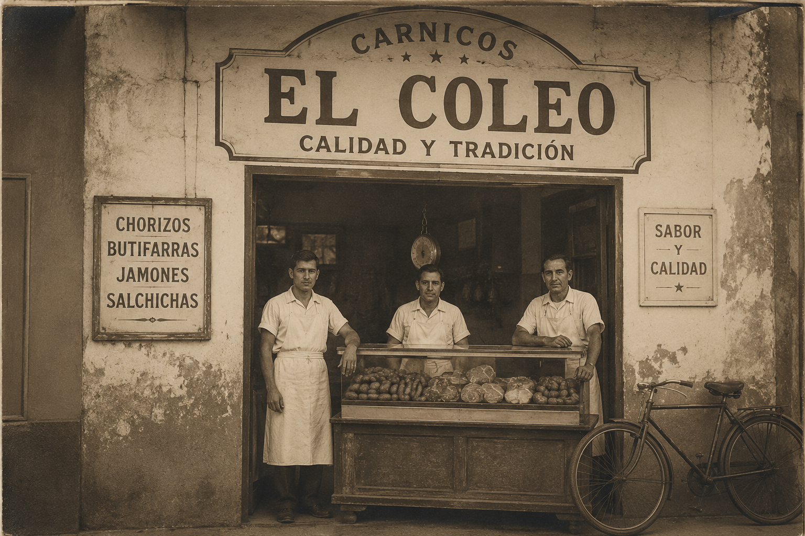

El Coleo es una empresa familiar con más de 10 años de experiencia en la fabricación y distribución de productos cárnicos y congelados de alta calidad. Nuestra historia en Barranquilla comenzó con el propósito de acercar a nuestros clientes productos confiables, de excelente sabor y elaborados bajo altos estándares de calidad.
A lo largo de los años, El Coleo se ha consolidado como una empresa reconocida en el sector alimentario, trabajando con más de 50 distribuidores a nivel nacional. Su crecimiento ha estado respaldado por la innovación, la calidad de sus productos y la confianza de quienes han elegido la marca como aliado comercial.
Inspirado en la tradición colombiana que representa el coleo, el nombre de la empresa simboliza valores como el trabajo, la disciplina y el arraigo a las raíces del país. Actualmente, El Coleo continúa fortaleciendo su presencia en el mercado mediante el desarrollo de productos cárnicos y congelados dirigidos a salsamentarias, restaurantes, negocios de comida rápida y distribuidores, manteniendo siempre su compromiso con la calidad, la inocuidad y el buen sabor.